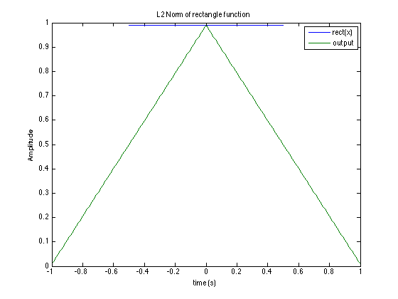
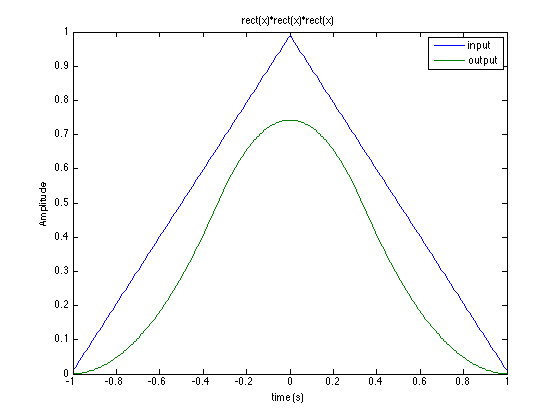

Task 2
Contents
Part a
dt = .01;
t = -.5:dt:.5;
x = ones(1,101);
x = x / (sum(x) * dt);
[y,ty] = nconv(x,t,x,t);
plot(t,x,ty,y);
legend('rect(x)','output');
xlabel('time (s)');
ylabel('Amplitude');
title('L2 Norm of rectangle function');

Part b
[y,ty] = nconv(x,t,x,t);
[Y,Ty] = nconv(y,t,x,t);
plot(ty,y,Ty,Y);
legend('input','output');
xlabel('time (s)');
ylabel('Amplitude');
title('rect(x)*rect(x)*rect(x)');

Part c
sigma = .2915;
y = x;
ty = t;
cstring ='rgbcmyk';
g = 1/(sqrt(2*pi)*sigma)*exp(-(ty.^2)/(2*sigma^2));
plot(t,g,'-r');
for i=1:40
[y,ty] = nconv(y,ty,x,t);
if(i == 3 || i == 10 || i == 20 || i == 40)
y2 = sqrt(i) .* y;
ty = ty / sqrt(i);
g = 1/(sqrt(2*pi)*sigma)*exp(-(ty.^2)/(2*sigma^2));
figure();
plot(ty,g,ty,y2,cstring(mod(i,7)+1) )
legend(sprintf('normal fnct %d iterations',i),sprintf('y2 after %d iterations',i))
end
end
Part D
dt = .01;
t = -.5:dt:.5;
x = [ones(1,20) zeros(1,61) ones(1,20)];
x = x/(sum(x) * dt );
plot(t,x)
xlabel('time (s)');
ylabel('Amplitude');
title('Step input');
sigma = .4091;
minN = 0;
y = x;
ty = t;
g = 1/(sqrt(2*pi)*sigma)*exp(-(ty.^2)/(2*sigma^2));
for i=1:1000
[y,ty] = nconv(y,ty,x,t);
y2 = sqrt(i)* y;
t2 = ty / sqrt(i);
g = 1/(sqrt(2*pi)*sigma)*exp(-(t2.^2)/(2*sigma^2));
if max(y2 - g) < .01
minN = i;
break
end
end
figure();
plot(t2,g,t2,y2);
legend('normal function','convolution output');
xlabel('time(s)');
ylabel('Amplitude');